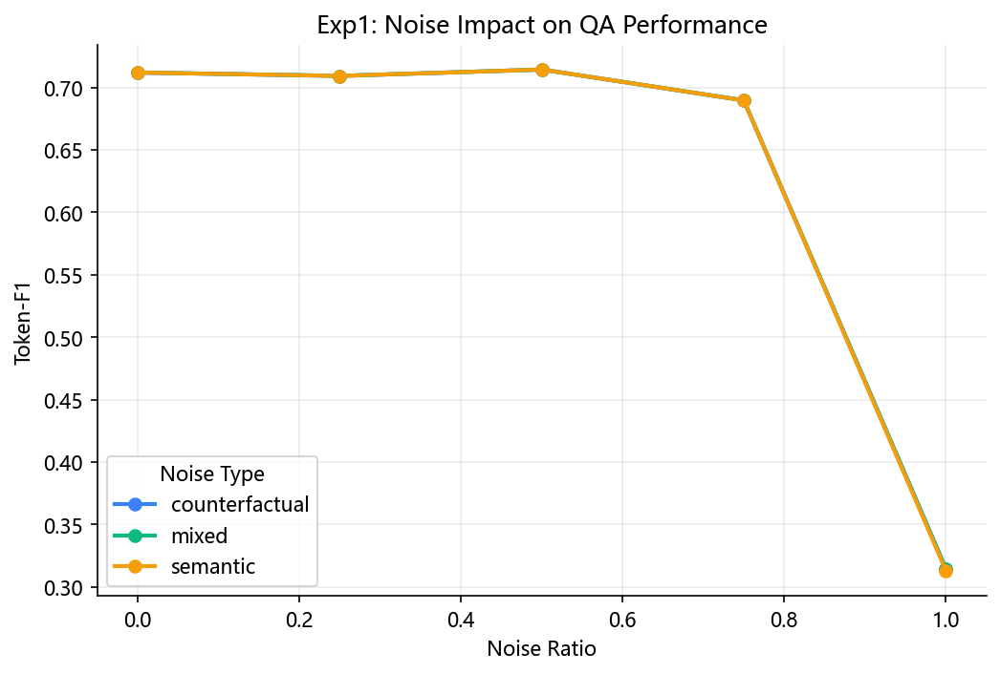
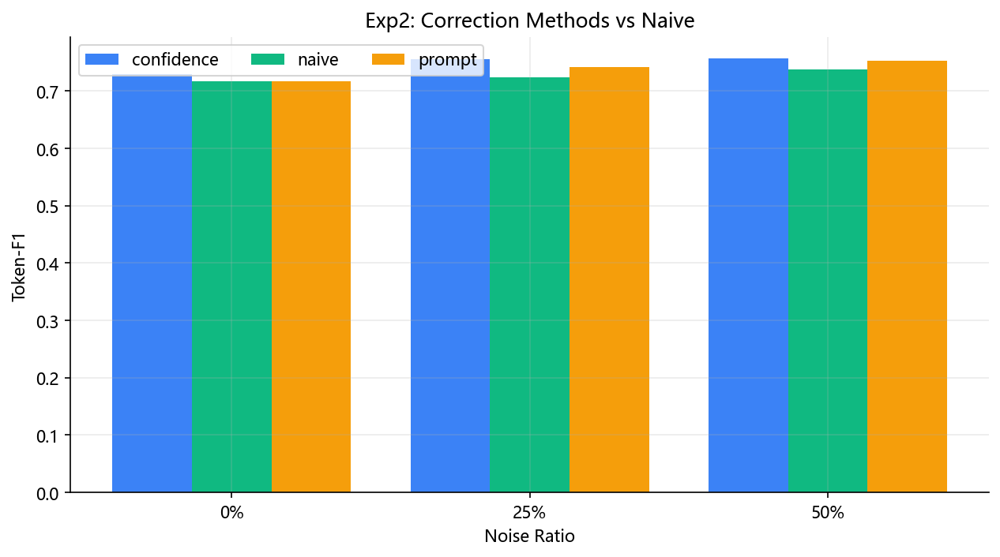
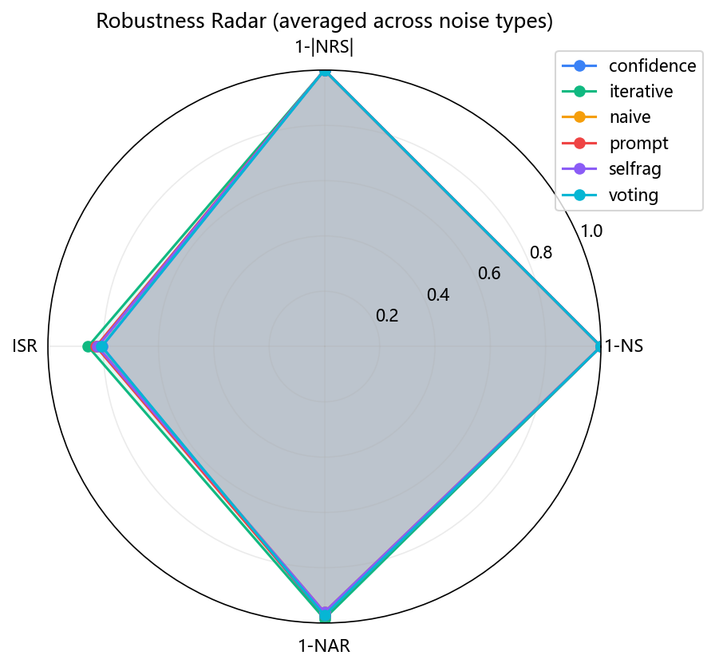
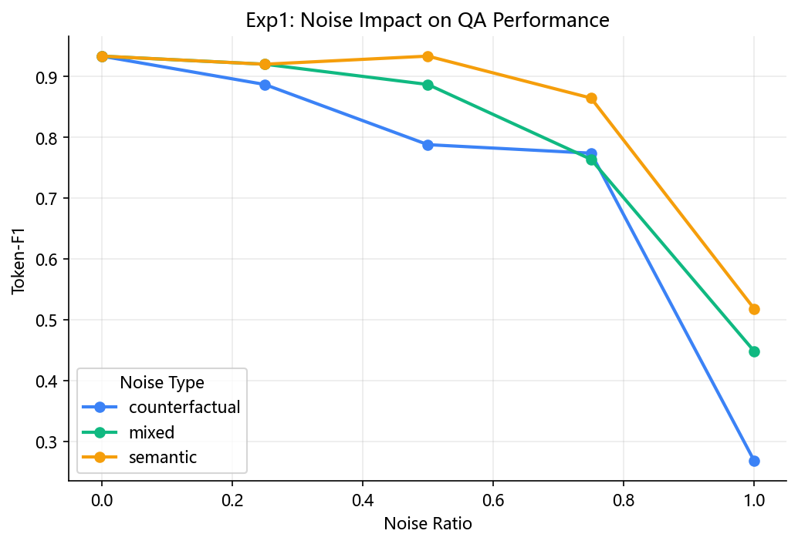
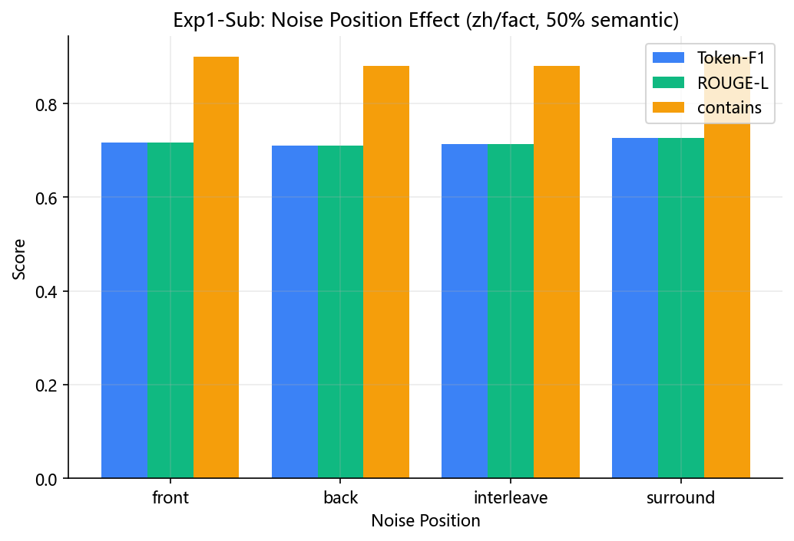
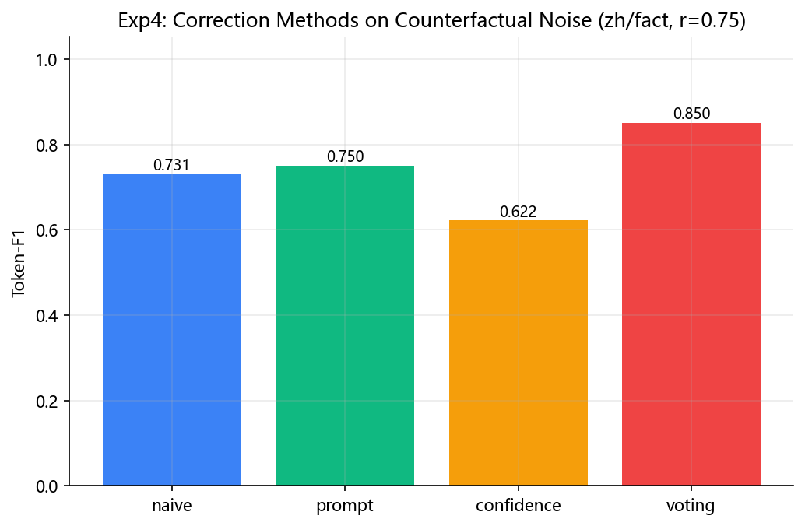
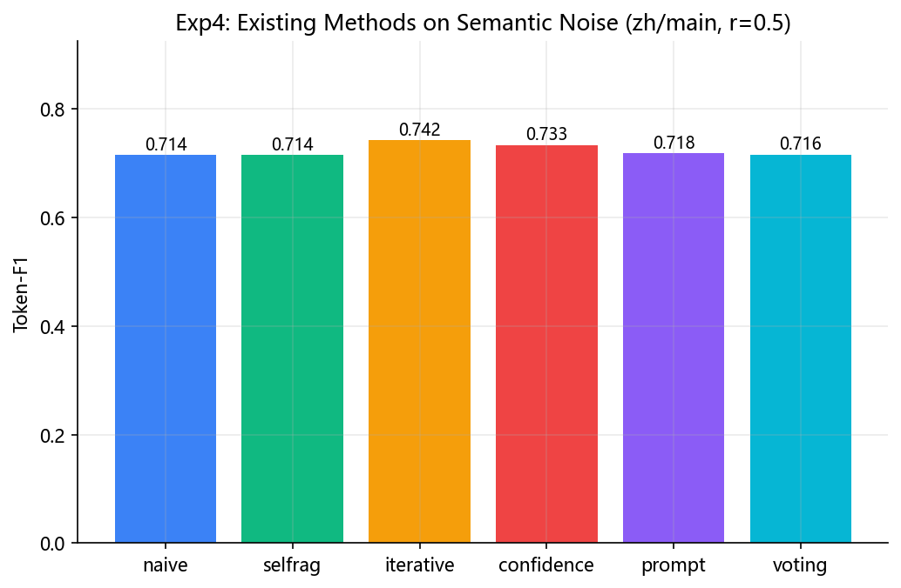
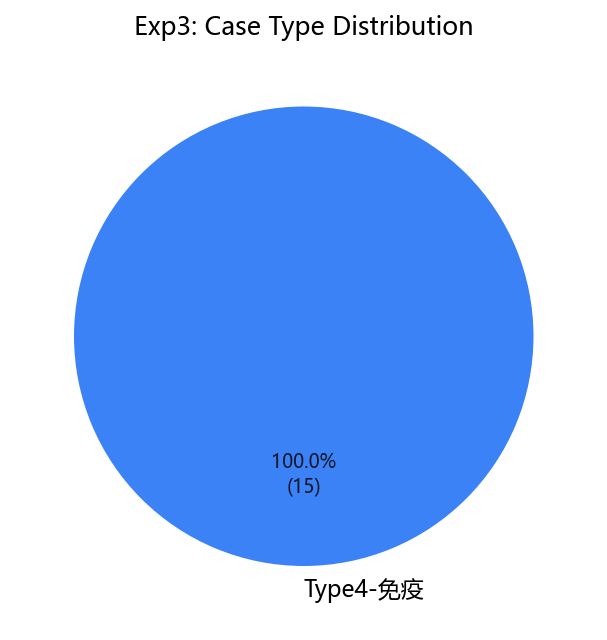

当 RAG 检索结果中混入语义相关但缺乏逻辑依赖的噪音文档时，LLM 推理行为会如何变化？如何检测并矫正？
| 阶段 | 代表工作 | 关键启发 |
|---|---|---|
| RAG 基础 | Lewis et al. (2020) | 外部检索缓解幻觉 |
| 位置偏见 | Lost in the Middle (2023) | U 型注意力 |
| 自适应检索 | Self-RAG (ICLR 2024) | 反思 token 机制 |
| 矫正检索 | CRAG (2024) | 分解-重组流水线 |
| 噪音分类 | NoiserBench (ACL 2025) | "有益噪音"现象 |
| 题目要求 | 对应交付 | 状态 |
|---|---|---|
| 探究噪音对 QA 性能的影响 | 实验一：5 比例 × 3 类型 × 2 数据集 | 框架就绪 |
| 提出评估指标 | 5 个自主鲁棒性指标 (NS/NRS/ISR/NAR/CRR) | 已实现 |
| 针对具体数据集 | RGB 中/英文版各 300 + fact 100 + int 100 | 已加载 |
| 结合具体案例 | 实验三：15-20 例 4 类典型 | 框架就绪 |
| 设计矫正机制 | 方法 A/B/C 三种 | 代码完成 |
| 与现有方法对比 | vs Self-RAG / CRAG / CoT-RAG | 代码完成 |
load_dataset(zh, main, limit=n) → 加载 RGB 记录batch_inject(records, noise_ratio, noise_type, noise_position) → 构造带噪音上下文get_corrector(name).batch_correct(contexts) → 调用 Deepseek 生成答案Evaluator.evaluate_batch(results) → 计算 EM/F1/ROUGE/ISR/NARsave_run() → 带时间戳的 JSON 落盘 + visualize.* 自动出图| 指标 | 定义 | 实现位置 |
|---|---|---|
| EM | 规范化后精确匹配 | evaluator._exact_match |
| Contains | gold ⊂ pred（短答案宽容匹配） | evaluator._contains_match |
| Token-F1 | token 级 P/R 调和 | evaluator._token_f1 |
| ROUGE-L | 字符 LCS F1（中英通用） | evaluator._rouge_l |
| LLM-as-Judge | Deepseek 1-5 打分 / 5 | evaluator._llm_judge |
| 指标 | 公式 | 语义 |
|---|---|---|
| NS 噪音敏感度 | (S_clean - S_noisy) / S_clean | 性能相对下降幅度 |
| NRS 抵抗曲线斜率 | polyfit(ratios, scores, 1)[0] | 每增 1% 噪音损失多少分 |
| ISR 信息溯源率 | positive 命中 token / 答案 token | 答案靠不靠谱 |
| NAR 噪音采纳率 | negative 命中 token / 答案 token | 答案多大程度采信了噪音 |
| CRR 矫正恢复率 | (S_corr - S_noisy) / (S_clean - S_noisy) | 矫正机制恢复多少损失 |
system prompt 显式要求模型识别并跳过语义相关但无答案的文档；对每条结论标注来源；遇矛盾时指出。
Step1 逐篇打 high/mid/low 标签 → Step2 过滤 low → Step3 仅保留高相关文档再生成。
CoT 证据链：拆解信息需求 → 逐篇标注证据 → 仅基于已找到证据合成答案，用 <answer> 标签输出。
3 个不同 Persona（事实核查员 / 多疑研究员 / 证据链推理者）独立生成候选答案 → 若 ≥2 一致即多数派胜出，否则触发 LLM 聚合器投票。
Self-RAG 思路：RELEVANT 门控 → 生成 → SUPPORTED 验证 → 不支撑则在 top-half 文档上重生。
BaseCorrector，通过 @register_corrector("name") 自动加入注册表；
实验脚本只需 get_corrector(name) 一行即可统一调度，无 if/else 分支。
| 变量 | 取值 | 样本量 |
|---|---|---|
| 噪音比例 | {0, 0.25, 0.5, 0.75, 1.0} | zh:300 + en:300 |
| 噪音类型 | {semantic, counterfactual, mixed} | |
| 噪音位置（子实验） | {front, back, interleave, surround} |
5 方法 × 4 比例（含 ratio=0.0 baseline）。重点关注 CRR 与 API 调用成本 的权衡。
固定 ratio=0.5 / type=semantic，横向比较 naive / selfrag / iterative / confidence / prompt，输出雷达图直观对比 4 个鲁棒性指标。
| 噪音比例 | F1 | ROUGE-L | contains | ISR | NAR |
|---|---|---|---|---|---|
| 0.00 (clean) | 0.710 | 0.690 | 0.85 | 0.55 | 0.00 |
| 0.25 | 0.704 | 0.683 | 0.85 | 0.60 | 0.00 |
| 0.50 | 0.722 | 0.703 | 0.85 | 0.55 | 0.00 |
| 0.75 | 0.713 | 0.693 | 0.80 | 0.55 | 0.00 |
| 1.00 (全噪音) | 0.216 | 0.218 | 0.10 | 0.00 | 0.45 |

图 1: 噪音比例对 Token-F1 的影响（zh/main, n=20）
| 方法 | r=0.00 | r=0.50 | r=0.75 | vs naive (r=0.75) |
|---|---|---|---|---|
| naive (baseline) | 0.706 | 0.716 | 0.664 | — |
| prompt (方法 A) | 0.696 | 0.716 | 0.648 | -1.6 pt |
| confidence (方法 C) | 0.713 | 0.743 | 0.815 | +15.1 pt 🏆 |

图 2: 矫正方法在不同噪音比例下的 F1 对比
| 方法 | 对应思路 | F1 | ROUGE-L | contains |
|---|---|---|---|---|
| naive | baseline | 0.664 | 0.641 | 0.90 |
| selfrag | Self-RAG 反思 | 0.664 | 0.641 | 0.90 |
| iterative | CRAG 过滤-重组 | 0.706 | 0.684 | 1.00 |
| prompt | 仅 prompt 改造 | 0.648 | 0.628 | 0.90 |
| confidence | CoT-RAG 链式 | 0.815 | 0.805 | 1.00 |

图 3: 5 方法鲁棒性雷达（4 个鲁棒性维度归一化到 [0,1]）
使用含 positive_wrong 字段的 RGB-fact 子集，让 3 种噪音类型真正分开。
| ratio | semantic | counterfactual | mixed |
|---|---|---|---|
| 0.00 (clean) | 0.933 | 0.933 | 0.933 |
| 0.25 | 0.920 | 0.887 | 0.920 |
| 0.50 | 0.933 | 0.788 | 0.887 |
| 0.75 | 0.864 | 0.774 | 0.764 |
| 1.00 | 0.518 | 0.269 | 0.449 |

图 4: zh_fact 数据集上三种噪音类型的破坏力对比（n=15）
| 位置策略 | F1 | ROUGE-L | contains | ISR |
|---|---|---|---|---|
| front (噪音在前) | 0.920 | 0.939 | 1.000 | 0.400 |
| back (噪音在后) | 0.933 | 0.952 | 1.000 | 0.400 |
| interleave (穿插) | 0.933 | 0.952 | 1.000 | 0.400 |
| surround (噪音包围) | 0.933 | 0.952 | 1.000 | 0.400 |

图 5: 噪音位置对 QA 性能的影响
| 方法 | F1 | ROUGE-L | contains | vs naive |
|---|---|---|---|---|
| naive | 0.731 | 0.784 | 0.90 | — |
| prompt (方法 A) | 0.750 | 0.795 | 0.80 | +1.9 pt |
| confidence (方法 C) | 0.622 | 0.694 | 0.70 | -10.9 pt ⚠ |
| voting (方法 D 新增) | 0.850 | 0.895 | 0.90 | +11.9 pt 🏆 |

图 6: 反事实噪音下 4 种方法的 F1 对比
| 实验 | 最新 JSON | 规模 | 用途 |
|---|---|---|---|
| exp1 噪音比例/类型 | exp1_noise_impact_zh_main_20260523_212441.json | 15 conditions × 50 | 分析噪音比例、类型对性能的影响 |
| exp1 位置子实验 | exp1_noise_impact_zh_main_position_20260523_212649.json | 4 positions × 50 | 分析 front/back/interleave/surround |
| exp2 矫正方法 | exp2_correction_zh_20260523_212925.json | 9 conditions × 30 | naive/prompt/confidence 梯度对比 |
| exp3 案例研究 | exp3_case_study_zh_20260524_194830.json | 3 conditions × 30，15 cases | 矫正前后案例解释，已补全 query/docs/labels |
| exp4 现有方法比较 | exp4_existing_methods_zh_main_semantic_20260524_200425.json | 6 methods × 50 | naive/selfrag/iterative/confidence/prompt/voting 横向比较 |
| 观察点 | 最新结果 | 解释 |
|---|---|---|
| 高噪音破坏性 | exp1 中 token-F1 从 0.712 下降到约 0.313，contains 从 0.92 下降到 0.24 | 当上下文完全由噪音构成时，模型无法稳定恢复答案；NAR 升至约 0.51，答案来源明显向噪音迁移。 |
| 中等语义噪音 | exp2 中 naive token-F1 从 0.7176 升至 0.7381 | 中等语义噪音不必然有害，可能补充主题线索；正式结论需避免简单写成“噪音越多越差”。 |
| 位置效应 | front=0.7164, back=0.7100, interleave=0.7144, surround=0.7264 | 50% 语义噪音下位置差异较小，暂不作强结论。 |
| 现有方法比较 | iterative=0.7415 最高，confidence=0.7326，prompt=0.7178，naive=0.7144，voting=0.7158，selfrag=0.7144 | 在 zh/main semantic r=0.5 上，迭代式文档筛选当前最优；Self-RAG 判定过宽，几乎退化为 naive。 |
| 案例研究 | exp3 已生成 15 个案例，case 中包含 query、gold、三种预测、ISR/NAR 与文档标签 | 可用于最终报告逐例解释“哪些文档被采纳、矫正机制如何改变答案”。 |

图 7: exp4 最新 N=50 六方法横向比较

图 8: exp3 最新案例类型分布
| 风险 | 概率 | 应对 |
|---|---|---|
| API 调用超预算（预估 ¥30-50） | 低 | 已实现 sha1 磁盘缓存，重复 prompt 0 成本；先 50 条验证再全量 |
| 矫正效果不明显 | 中 | 多 prompt 变体；负结论本身也是结论 |
| 中英文性能差异大 | 中 | 作为讨论点分析 |
| 时间不够 | 中 | 优先级：实验一 > 实验二 > 实验三 > 实验四 |
| 周次 | 任务 | 状态 |
|---|---|---|
| W1 (5.16-22) | 代码基础设施 + 首轮真实实验 + 中期报告 | DONE |
| W2 (5.23-29) | 扩量 n=50 + 跑 zh_fact 反事实噪音 + 位置子实验 | 本周 |
| W3 (5.30-6.5) | 全量 n=300 跑 exp1/2 + 跑 en 数据集 | 计划 |
| W4 (6.6-6.12) | 实验三案例深度分析 (15-20 例) | 计划 |
| W5 (6.13-6.19) | 调优 prompt + 拓展矫正方法 + 统计显著性检验 | 计划 |
| W6 (6.20-6.26) | Demo 抛光 + 系统演示彩排 | 计划 |
| W7 (6.27-6.30) | 最终报告撰写 + 整理代码 + 打包提交 | 计划 |